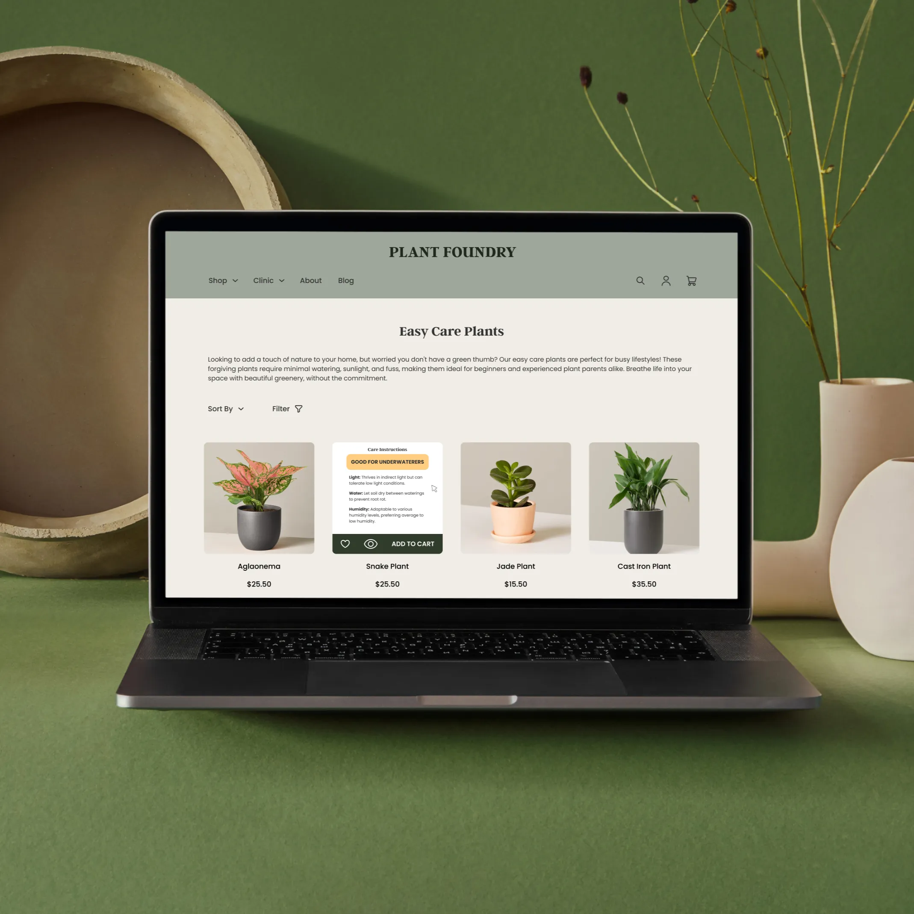
UX Researcher & UX/UI Designer
Solo, 2 weeks
User interviews, Affinity Mapping, Competitive & Comparative (C&C) Analysis, Journey Mapping, Persona, Information Architecture (IA), Card Sorting, Sketching, Wireframing, Prototyping, Usability Testing, Presentation
Figma, Illustrator, Photoshop, Google Workspace
Plant Foundry is a woman-owned urban nursery and store in Sacramento. They sell a wide variety of products, from organic plants and supplies, to gardening tools and outdoor furniture, to books and home decor, you name it!
Their vision is to share their love and knowledge of plants with people at all stages of the gardening journey.
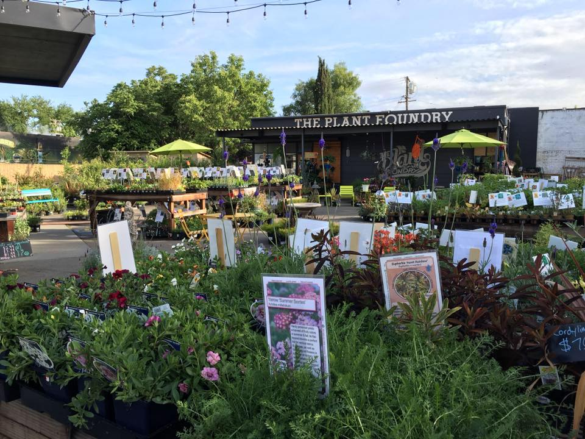
Plant Foundry has built their own e-commerce site, but due to the limited time and knowledge on UX/UI, the site is left a bit disorganized and hard for users to navigate.
As a UX Designer, I will create an intuitive, aesthetically pleasing design that aligns with their brand and mission. To maximize positive impact, I’ll start with the user’s experience with plants and work backwards to identify and address gaps in the site.
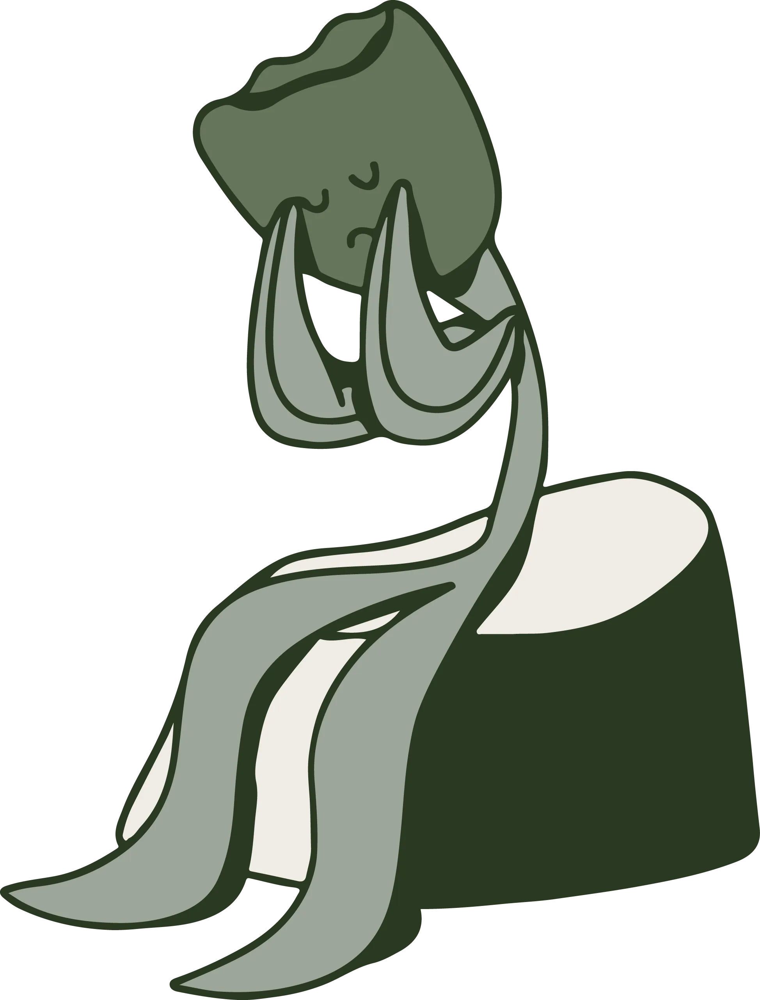
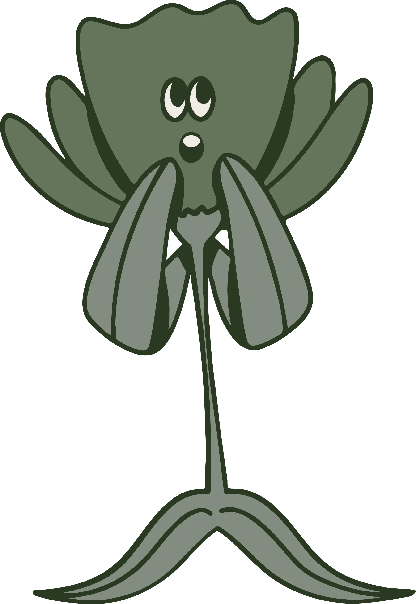
With the data I collected from my user interviews, I was able to establish a journey map my persona goes through.
There are 3 pain points my persona comes across:

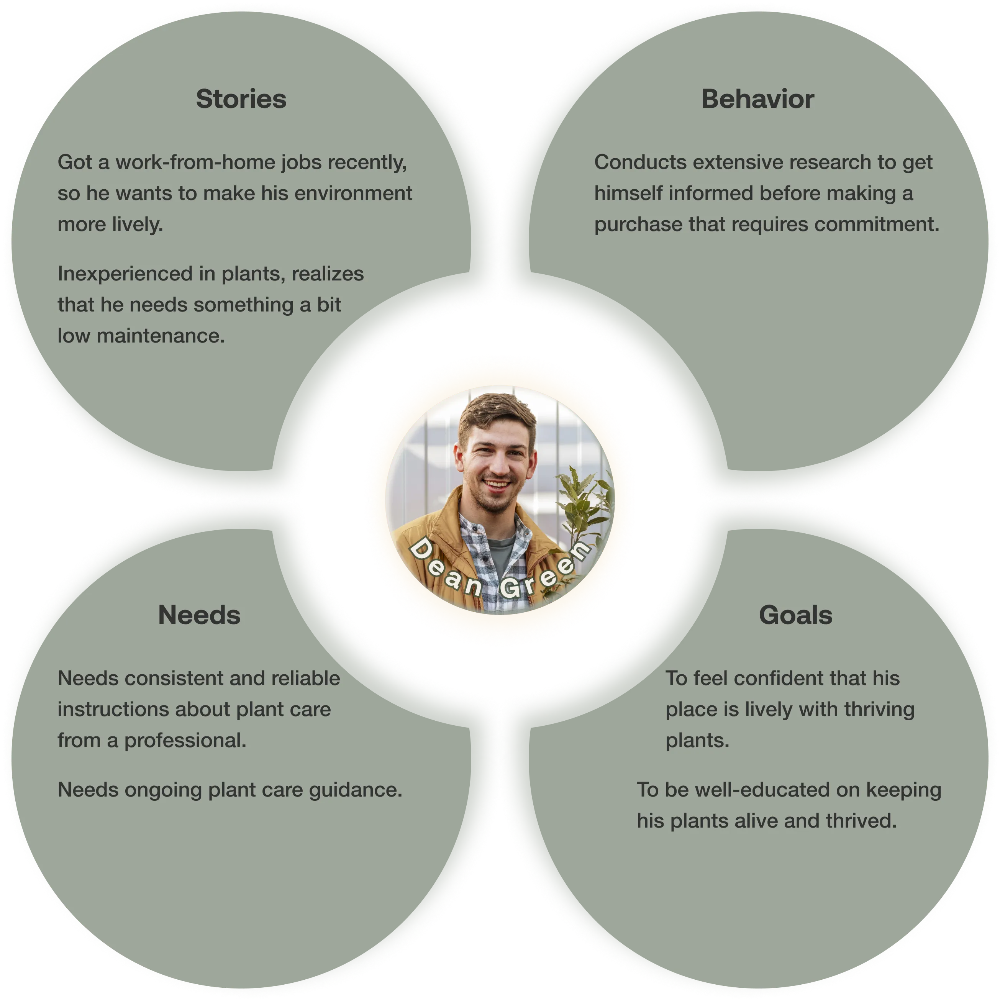
The website presents clear opportunities for improvement. I want to analyze and see where users may face frustration when navigating through the website.
With the help of Heuristic Evaluation, I was able to prioritize the necessary changes based on their severity.
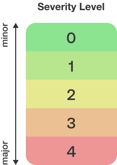
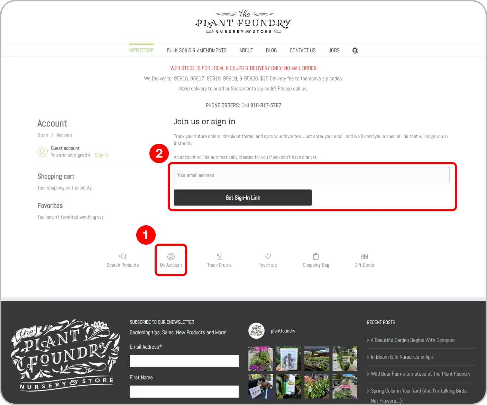
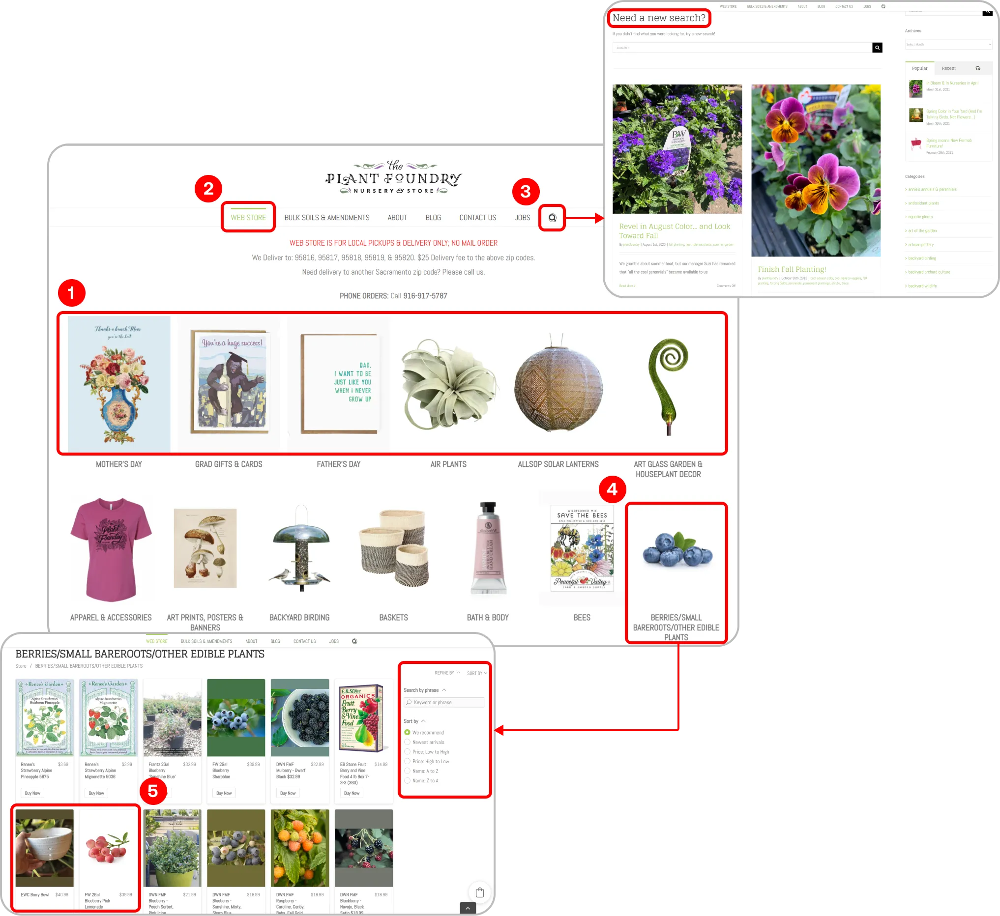
As an inexperienced plant owner, even if you manage to find info about plant care on the internet, how reliable is it really, considering that anyone online can claim to be a professional without any accountability? This is a problem arises in the exploration touchpoint.
Even with in-store plant professionals present, they are not always available, or users may not know what questions to ask. This is a problem arises in the visit touchpoint.
I was able to form the problem statement based on the combination of Dean’s needs and goals from the persona, and the pain points in his journey map.
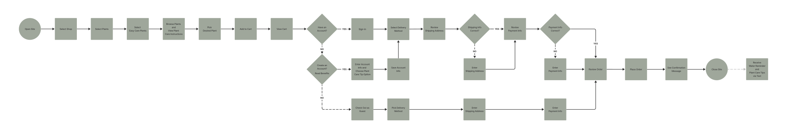
Based on the user research, understanding the appropriate amount and frequency of watering your plant poses a challenge, while others also find dealing with various weather conditions for their different plants frustrating.
To address this issue, I incorporated an option for users to provide their zip code. This allows us to send tailored plant care tips when a weather alert arises in their specified area.
Due to potential safety concerns, it is important to clearly state the exact purpose of the feature.
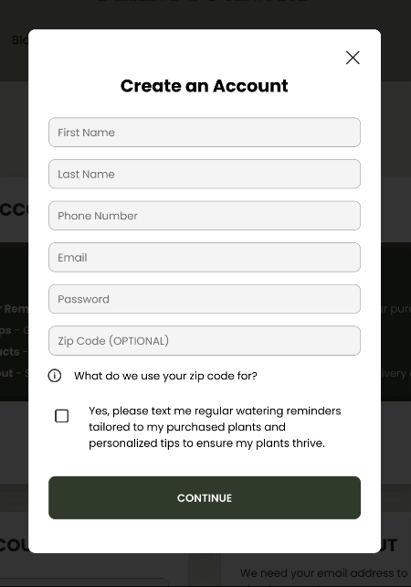
The redesign offers a more streamlined information architecture and personalized features for a more enjoyable user experience.
Following the initial usability study, I made a few updates in the re-iteration to address user pain points ad enhance usability as shown below.
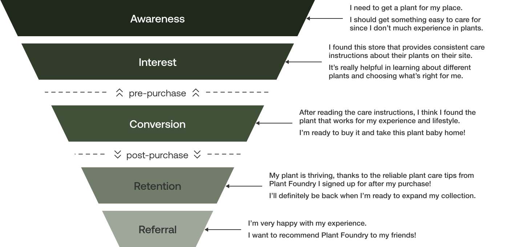